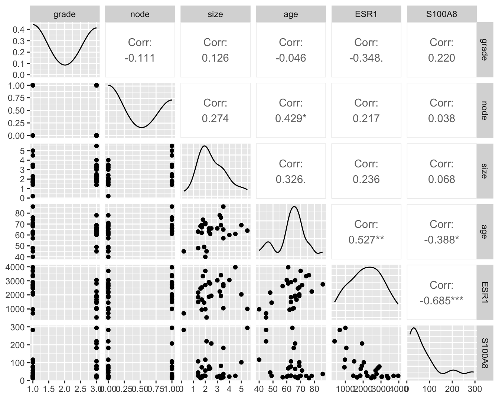
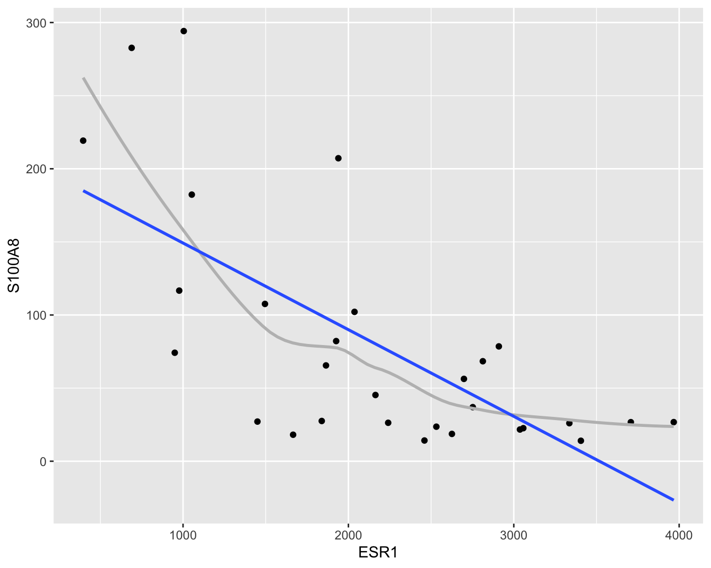
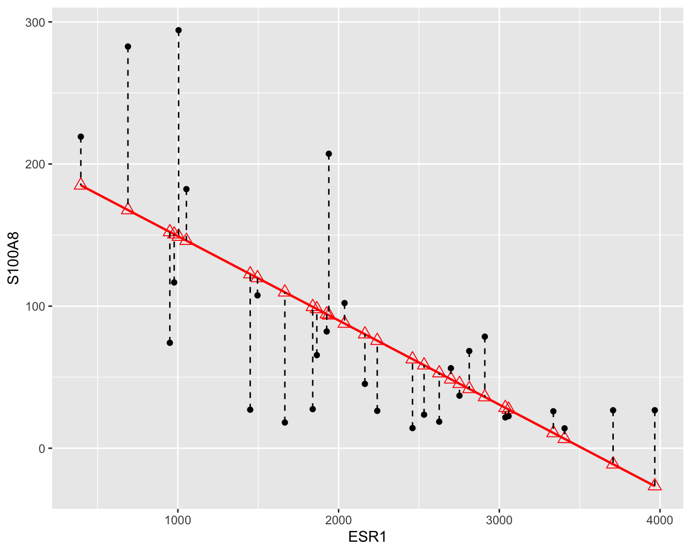
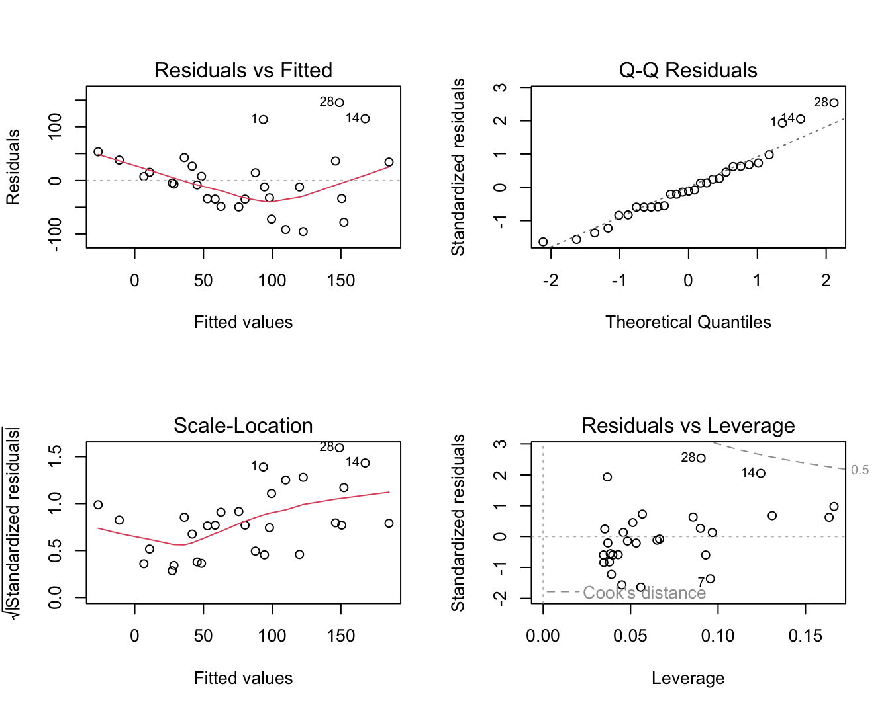
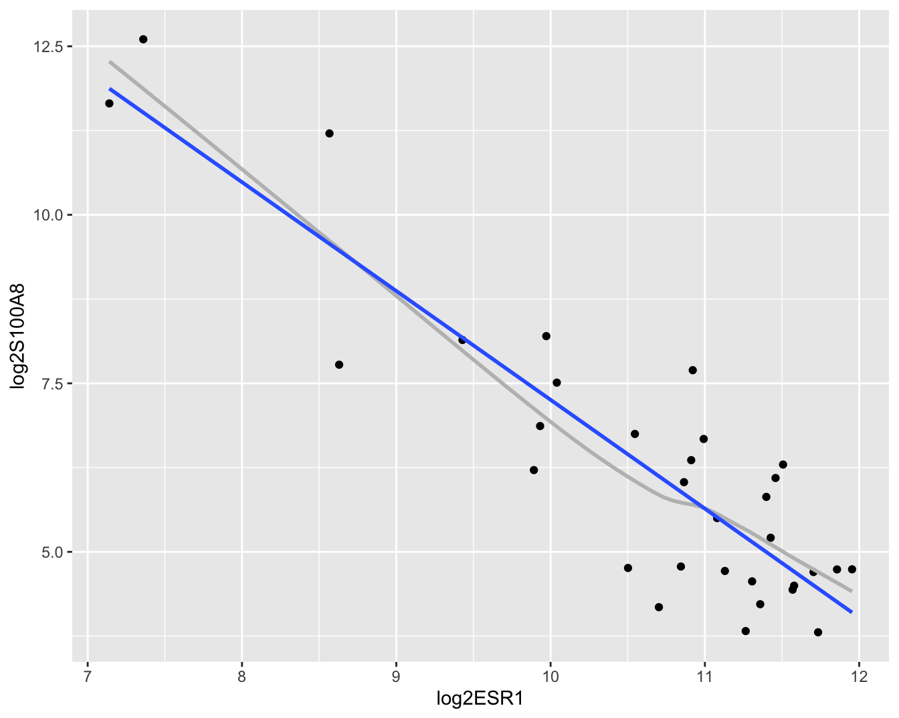
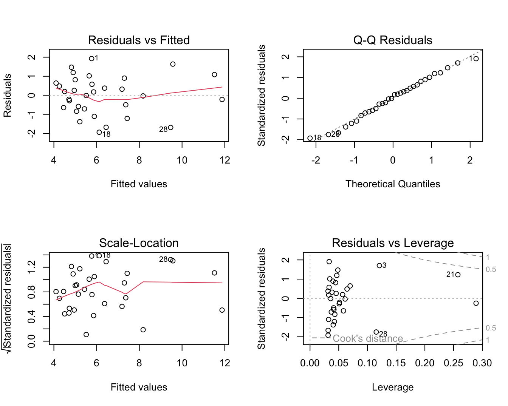
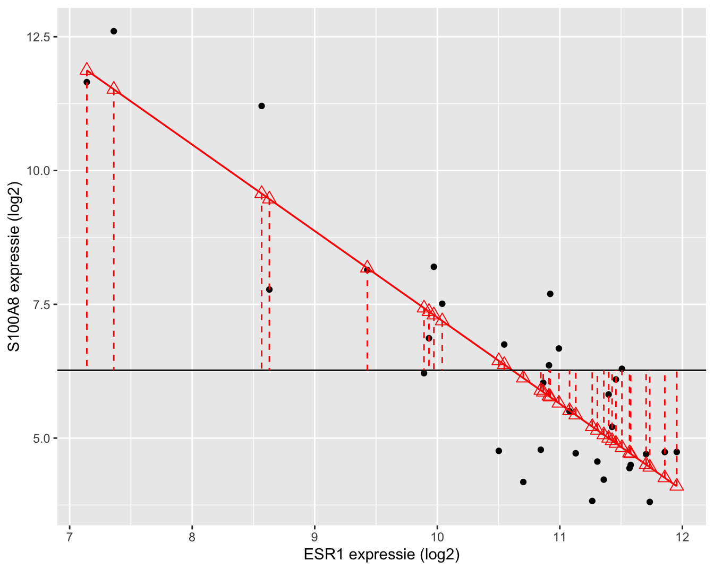
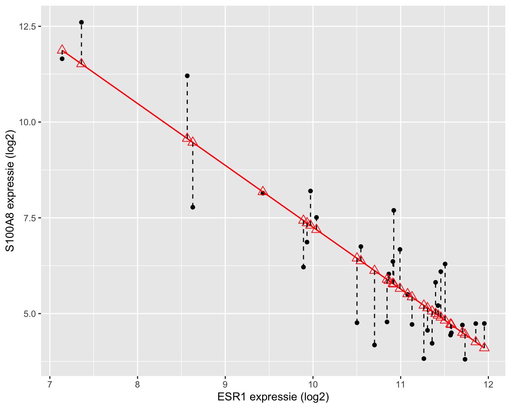
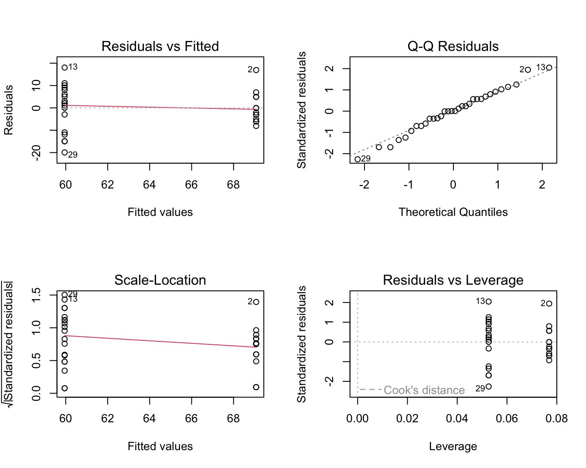
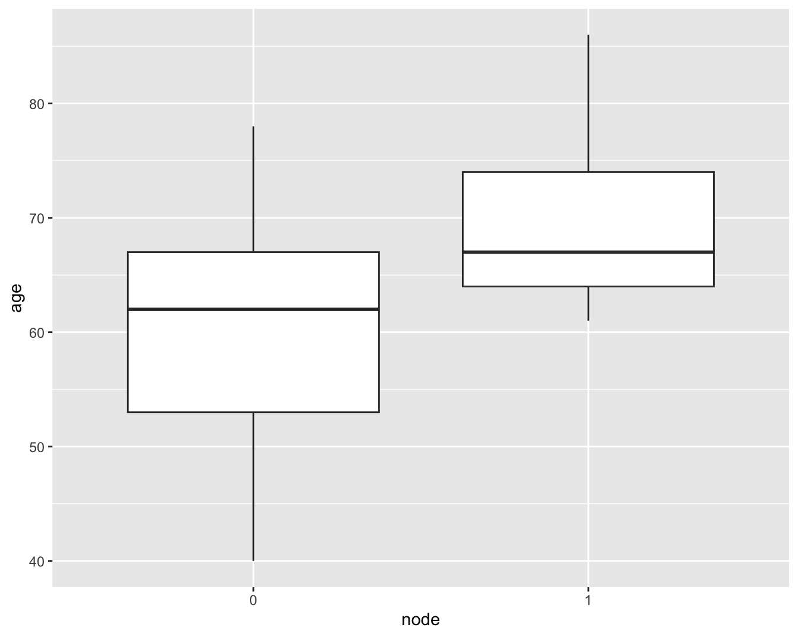

Sotiriou e.a. (2006) publiceerden onderzoek naar de moleculaire basis van borstkanker. In de studie hebben de onderzoekers voor een groot aantal borstkanker patiënten klinische variabelen geregistreerd alsook de genexpressie in tumor weefsel gemeten voor duizenden genen m.b.v. microarray technologie. De genexpressie werd gemeten op de tumor biopsie die werd genomen voordat de behandeling werd gestart. De studie is een retrospectieve studie in de zin dat niet werd geëxperimenteerd en dat de genexpressie werd geëvalueerd als gevolg van de blootstelling die de individuen hebben ondergaan in het verleden.
In dit hoofdstuk zullen we een subset van de data gebruiken om de associatie te bestuderen tussen de genexpressie van twee sleutelgenen bij borstkanker: de estrogeen receptor 1 (ESR1) gen, een belangrijke biomerker voor de prognose van de patiënt, en het S100A8 gen dat een prominente rol speelt in de regulatie van inflammatie en immuun respons.
De data is opgeslagen in een tekst bestand met naam brca.csv op de github repository van de cursus.
brca <-read_csv("https://raw.githubusercontent.com/statOmics/sbc/master/data/breastcancer.csv")knitr::kable(head(brca),caption="Overzicht van de variabelen in de borstkanker dataset.",booktabs =TRUE)
Tabel 7.1: Overzicht van de variabelen in de borstkanker dataset.
sample_name
filename
treatment
er
grade
node
size
age
ESR1
S100A8
OXFT_209
gsm65344.cel.gz
tamoxifen
1
3
1
2.5
66
1939.1990
207.19682
OXFT_1769
gsm65345.cel.gz
tamoxifen
1
1
1
3.5
86
2751.9521
36.98611
OXFT_2093
gsm65347.cel.gz
tamoxifen
1
1
1
2.2
74
379.1951
2364.18306
OXFT_1770
gsm65348.cel.gz
tamoxifen
1
1
1
1.7
69
2531.7473
23.61504
OXFT_1342
gsm65350.cel.gz
tamoxifen
1
3
0
2.5
62
141.0508
3218.74109
OXFT_2338
gsm65352.cel.gz
tamoxifen
1
3
1
1.4
63
1495.4213
107.56868
7.1.2 Data exploratie
In Sectie 5.7 werd de associatie tussen beide genen uitgebreid verkend. Daarin hebben we de genexpressie data eerst log-getransformeerd.
In dit hoofdstuk zullen we om didactische redenen eerst werken met de expressiemetingen op de originele schaal. De expressie van het S100A8 gen wordt weergegeven in Figuur 7.1. Op de originele schaal zien we drie heel grote outliers. Omwille van didactische redenen worden deze eerst verwijderd uit de dataset. In principe mogen outliers enkel worden verwijderd uit een studie als daar een goede reden voor is. We kunnen op basis van de informatie over de studie echter niet argumenteren waarom de outliers niet representatief zijn, zoals bijvoorbeeld wel het geval zou zijn wanneer zich meetfouten of problemen voordeden m.b.t. deze observaties in de studie. Later in het hoofdstuk zullen we zien hoe we op een correcte wijze alle data kunnen modelleren.
Om meerdere variabelen in de borstkanker dataset te bestuderen, kunnen we gebruik maken van de grafische scatterplot matrix voorstelling (zie Figuur 7.2). Hierbij wordt een matrix met paarsgewijze dotplots voor alle variabelen geproduceerd.
library(GGally)brcaSubset <- brca |>filter(S100A8<2000)#progress = FALSE zo dat ggpairs niet de vooruitgang print van het plottenbrcaSubset[,-(1:4)] |>ggpairs(progress =FALSE)

Figuur 7.2: Scatterplot matrix voor de observaties in de borstkanker dataset na verwijdering van outliers in de S100A8 expressie (merk op dat we deze outliers in principe niet mochten verwijderen uit de dataset).
In de scatterplot matrix zien we bijvoorbeeld dat er een positieve associatie lijkt te zijn tussen de leeftijd (age) en de lymfeknoop status (node; geeft aan of de lymfeknopen al dan niet aangetast zijn en chirurgisch werden verwijderd, node 0: niet aangetast, 1: aangetast). Daarnaast observeren we ook een indicatie voor een negatieve associatie (dalende trend) tussen de ESR1 en S100A8 gen expressie.
In dit hoofdstuk zullen we ons in het bijzonder focussen op de relatie tussen de ESR1 en de S100A8 gen expressie. Een individuele scatterplot met smoother (zie Figuur 7.3) geeft de associatie tussen beide genen nog beter weer. Smoothers kunnen trends visualiseren tussen variabelen zonder vooraf veronderstellingen te doen over de vorm van het verband en zijn daarom heel erg nuttig bij data exploratie. We zien dat de genexpressie van S100A8 gemiddeld gezien daalt voor patiënten met een hogere expressie van ESR1.
Figuur 7.3: Scatterplot voor S100A8 expressie in functie van de ESR1 expressie met smoother die het verband tussen beide genen samenvat (na verwijdering van outliers in de S100A8 expressie, merk op dat we deze outliers in principe niet mochten verwijderen uit de dataset).
7.1.3 Model
Op basis van Figuur 7.3 zien we dat er een relatie is tussen de S100A8 (Y) en ESR1 (X) expressie. De expressiemetingen voor het S100A8 gen zijn echter onderhevig aan ruis onder andere door biologische variabiliteit en technische variabiliteit. Voor een gegeven waarde \(X=x\) neemt de genexpressie \(Y\) dus niet steeds dezelfde waarde aan. Generiek kunnen we de S100A8 gen expressie dus beschrijven als
\[\text{observatie = signaal + ruis.}\]
Wiskundig kunnen we dat modelleren als
\[Y_i=g(X_i)+\epsilon_i\]
waarbij we de toevallige veranderlijke S100A8 genexpressie voor subject \(i\) (\(Y_i\)) modelleren in functie van de genexpressie van het ESR1 gen (\(X_i\)). Uiteraard is dit verband niet perfect. Dat wordt aangegeven door de foutterm \(\epsilon_i\) die uitdrukt dat observaties \(Y_i\) variëren rond dit verband, m.a.w. het verband modelleert een conditioneel gemiddelde:
\[E[Y_i|X_i=x]=g(x),\]
het is de verwachte uitkomst1 (\(E[Y]\)) bij subjecten met een expressieniveau \(X_i=x\) voor het ESR1 gen.
Zo geeft \(E(Y|X=2400)\) de gemiddelde genexpressie aan van het S100A8 gen voor subjecten die een expressie hebben van 2400 voor het ESR1 gen. Men zou dit gemiddelde bekomen door van alle patiënten in de studiepopulatie, die een ESR1 expressie hebben van 2400, de S100A8 expressie te meten en hier vervolgens het gemiddelde van te nemen. Het gemiddelde \(E(Y|X=x)\) wordt een conditioneel gemiddelde genoemd omdat het een gemiddelde uitkomst beschrijft, conditioneel op het feit dat \(X=x\).
Gezien
\[E[Y_i|X_i=x]=g(x)\]
het gemiddelde beschrijft voor subjecten met een ESR1 expressieniveau van \(x\) is de foutterm \(\epsilon_i\) gemiddeld 0 voor deze subjecten:
\[E[\epsilon_i\vert X_i=x]=0.\]
7.2 Lineaire regressie
Om accurate en interpreteerbare resultaten te bekomen gaat men vaak bepaalde veronderstellingen doen over de structuur van \(g(x)\). Zo modelleert men \(g(x)\) vaak als een lineaire functie van ongekende parameters. Dat wordt geïllustreerd in Figuur 7.4.
pipe dataset naar ggplot
selecteer data ggplot(aes(x=ESR1,y=S100A8))
voeg punten toe met geom_point()
voeg een “smooth line” toe geom_smooth()
voeg een rechte toe geom_smooth() met method = "lm" (linear model). (We zetten se = FALSE om geen puntgewijze betrouwbaarheidsintervallen weer te geven)
brcaSubset |>ggplot(aes(x = ESR1, y = S100A8)) +geom_point() +geom_smooth(se =FALSE, col ="grey") +geom_smooth(method ="lm", se =FALSE)

Figuur 7.4: Scatterplot voor S100A8 expressie in functie van de ESR1 expressie met lineair model dat het verband tussen beide genen samenvat (na verwijdering van outliers in de S100A8 expressie, merk op dat we deze outliers in principe niet mochten verwijderen uit de dataset zoals we verder in dit hoofdstuk zullen zien).
Men veronderstelt dan het onderstaande lineaire regressiemodel
\[
E(Y|X =x)=\beta_0 + \beta_1 x
\tag{7.1}\]
waarbij \(\beta_0\) en \(\beta_1\) ongekende modelparameters zijn. In deze uitdrukking stelt \(E(Y|X=x)\) de waarde op de \(Y\)-as voor, \(x\) de waarde op de \(X\)-as, het intercept\(\beta_0\) stelt het snijpunt met de \(Y\)-as voor en de helling\(\beta_1\) geeft de richtingscoëfficiënt van de rechte weer. Uitdrukking 7.1 wordt een statistisch model genoemd. Merk op dat dit model enkel een onderstelling maakt over het gemiddelde van de S100A8 expressie.
Deze naamgeving suggereert dat het bepaalde onderstellingen legt op de verdeling van de geobserveerde gegevens. In het bijzonder onderstelt het dat de gemiddelde uitkomst lineair varieert in functie van één verklarende variabele \(X\). Om die reden wordt Model 7.1 ook een enkelvoudig lineair regressiemodel genoemd. Onder dit model kan elke meting \(Y\) op een foutterm \(\epsilon\) na beschreven worden als een lineaire functie van de verklarende variabele \(X\), verder in deze cursus ook de predictor genoemd:
waarbij \(\epsilon\) de afwijking tussen de uitkomst en haar (conditioneel) gemiddelde waarde voorstelt, dit is de onzekerheid in de responsvariabele.
Gezien het lineair regressiemodel onderstellingen doet over de verdeling van X en Y , kunnen deze onderstellingen ook vals zijn. Later in dit hoofdstuk zullen we zien hoe deze onderstellingen geëvalueerd kunnen worden. Als echter voldaan is aan de onderstellingen, laat dit een efficiënte data-analyse toe: alle observaties worden benut om te leren over verwachte uitkomst bij X = x.
Het lineair regressiemodel kan worden gebruikt voor
- predictie (voorspellingen): als \(Y\) ongekend is, maar \(X\) wel gekend is, kunnen we \(Y\) voorspellen op basis van \(X\)
waarbij \(\beta_1\) het verschil is in gemiddelde uitkomst tussen subjecten die 1 eenheid verschillen in de genexpressie van het ESR1 gen.
7.3 Parameterschatting
De parameters \(\beta_0\) en \(\beta_1\) zijn ongekenden. Indien de volledige studiepopulatie geobserveerd werd, dan zouden beide parameters exact bepaald kunnen worden (door bijvoorbeeld in 2 x-waarden de gemiddelde uitkomst te berekenen en vervolgens het resulterende stelsel van 2 vergelijkingen, bepaald door Model 7.1, op te lossen).
In de praktijk observeert men slechts een beperkte steekproef uit de studiepopulatie en is de taak om die parameters te schatten op basis van de beschikbare observaties. Deze schatting gebeurt door naar de lijn te zoeken die “het best past” bij de gegevens. Daarbij wil men dat bij een gegeven waarde \(x_i\) voor het \(i\)-de subject het punt op de regressielijn, \((x_i, \beta_0 + \beta_1 x_i)\), zo weinig mogelijk afwijkt van de overeenkomstige observatie \((x_i, y_i)\). Dit realiseert men door deze waarden voor \(\beta_0\) en \(\beta_1\) te kiezen die de som van die kwadratische afstanden tussen de voorspelde en geobserveerde punten,
zo klein mogelijk maakt. Waarbij \(e_i\) de verticale afstanden van de observaties tot de gefitte regressierechte, ook wel residuen genoemd (zie Figuur 7.5).

Figuur 7.5: Scatterplot voor S100A8 expressie in functie van de ESR1 expressie met lineair model (rode lijn) en residuen (zwarte gestreepte lijnen).
De rechte die men aldus bekomt, noemt men de kleinste kwadratenlijn en is de best passende rechte door de puntenwolk.
De overeenkomstige waarden of schattingen \(\hat{\beta}_0\) voor \(\beta_0\) en \(\hat{\beta}_1\) voor \(\beta_1\), noemt men kleinste kwadratenschattingen.
Merk op dat de helling van de kleinste kwadratenlijn evenredig is met de correlatie tussen de uitkomst en de verklarende variabele.
Voor gegeven schattingen \(\hat{\beta}_0\) voor \(\beta_0\) en \(\hat{\beta}_1\) voor \(\beta_1\) laat het lineaire regressiemodel 7.1 toe om:
de verwachte uitkomst te voorspellen voor subjecten met een gegeven waarde \(x\) voor de verklarende variabele. Deze kan geschat worden als \(\hat{\beta}_0+\hat{\beta}_1x\).
na te gaan hoeveel de uitkomst gemiddeld verschilt tussen 2 groepen subjecten met een verschil van \(\delta\) eenheden in de verklarende variabele. Namelijk:
Voor de borstkanker dataset levert een analyse van de gegevens in R de volgende resultaten op.
lm1 <-lm(S100A8 ~ ESR1, brcaSubset)summary(lm1)
Call:
lm(formula = S100A8 ~ ESR1, data = brcaSubset)
Residuals:
Min 1Q Median 3Q Max
-95.43 -34.81 -6.79 34.23 145.21
Coefficients:
Estimate Std. Error t value Pr(>|t|)
(Intercept) 208.47145 28.57207 7.296 7.56e-08 ***
ESR1 -0.05926 0.01212 -4.891 4.08e-05 ***
---
Signif. codes: 0 '***' 0.001 '**' 0.01 '*' 0.05 '.' 0.1 ' ' 1
Residual standard error: 59.91 on 27 degrees of freedom
Multiple R-squared: 0.4698, Adjusted R-squared: 0.4502
F-statistic: 23.93 on 1 and 27 DF, p-value: 4.078e-05
De software rapporteert \(\hat{\beta}_0=\) 208.47 en \(\hat{\beta}_1=\)-0.059. We besluiten dat, de verwachte S100A8 expressie gemiddeld 59 eenheden lager ligt bij patiënten met een ESR1 expressieniveau die 1000 eenheden hoger ligt. Bovendien kunnen we de S100A8 expressie voorspellen die men mag verwachten bij een gegeven ESR1 expressieniveau. Bijvoorbeeld, bij een ESR1 expressieniveau van 1300 verwachten we een S100A8 expressieniveau van 208.47 \(-\) 0.059 \(\times\) 1300= 131.43.
Merk op in Figuur 7.4 dat er in de dataset geen patiënt is geobserveerd die een ESR1 expressieniveau had van 1300. Op basis van de dataset zou het bijgevolg niet mogelijk zijn om, zonder gebruik te maken van een statistisch model, een schatting te bekomen voor de S100A8 expressie bij deze ESR1 expressiewaarde. Onder de veronderstelling dat de gemiddelde S100A8 expressie lineair varieert in functie van de ESR1 expressie, kunnen we alle observaties gebruiken om dit gemiddelde te schatten. Bijgevolg bekomen we een zinvol en precies resultaat, op voorwaarde dat aan de veronderstelling van lineariteit is voldaan. Het zal bijgevolg belangrijk zijn om de veronderstelling van lineariteit na te gaan (zie verder).
Gezien de lineariteit van het model enkel kan worden nagegaan over het geobserveerde bereik van de verklarende variabele (bijvoorbeeld, over het interval 396.1,3967.2), is het belangrijk om te begrijpen dat de resultaten van een lineair regressiemodel niet zomaar kunnen geëxtrapoleerd worden voorbij de kleinste of grootste geobserveerde \(X\)-waarde. Met het model kunnen we de verwachte S100A8 intensiteit voor patiënten met een ESR1 expressie-niveau van 4500 schatten, maar de geobserveerde data laten niet toe om na te gaan of dit een betrouwbare schatting is. Het zou immers kunnen dat de regressielijn bij hoge waarden van de predictorvariabele afbuigt of opklimt waardoor een lineaire extrapolatie misleidend zou zijn. Merk zo bijvoorbeeld op dat predictie bij een ESR1 intensiteit van 4500 bijzonder misleidend is vermits ze een negatief resultaat oplevert wat onmogelijk is voor een intensiteitsmeting (208.47 \(+\) -0.059 \(\times\) 4500= -58.22).
7.4 Statistische besluitvorming
Als de gegevens representatief zijn voor de populatie kan men in de regressiecontext eveneens aantonen dat de kleinste kwadraten schatters voor het intercept en de helling onvertekend zijn, m.a.w
\[E[\hat \beta_0]=\beta_0 \text{ en } E[\hat \beta_1]=\beta_1\]
Het feit dat de schatters gemiddeld (over een groot aantal vergelijkbare studies) niet afwijken van de waarden in de populatie, impliceert niet dat ze niet rond die waarde variëren. Om inzicht te krijgen hoe dicht we de parameterschatters bij het werkelijke intercept \(\beta_0\) en de werkelijke helling \(\beta_1\) mogen verwachten, wensen we bijgevolg ook haar variabiliteit te kennen.
In de borstkanker dataset hebben we een negatieve associatie geobserveerd tussen de S100A8 en ESR1 gen expressie. Net zoals in Hoofdstuk 6 is het op basis van de puntschatters voor de helling niet duidelijk of dat verband werkelijk voorkomt in de populatie of indien we het verband door toeval hebben geobserveerd in de dataset. De schatting van de helling is immers onnauwkeurig en zal variëren van steekproef tot steekproef. Het resultaat van een data-analyse is dus niet interpreteerbaar zonder die variabiliteit in kaart te brengen.
Om de resultaten uit de steekproef te kunnen veralgemenen naar de populatie zullen we in deze context eveneens inzicht nodig hebben op de verdeling van de parameterschatters. Om te kunnen voorspellen hoe de parameterschatters variëren van steekproef tot steekproef enkel en alleen op basis van slechts één steekproef zullen we naast de onderstelling van
Lineariteit
bijkomende aannames moeten maken over de verdeling van de gegevens, met name
Onafhankelijkheid: de metingen \((X_1,Y_1), ..., (X_n,Y_n)\) werden gemaakt bij n onafhankelijke subjecten/observationele eenheden
Homoscedasticiteit of gelijkheid van variantie: de observaties variëren met een gelijke variantie rond de regressierechte. De residuen \(\epsilon_i\) hebben dus een gelijke variantie \(\sigma^2\) voor elke \(X_i=x\). Dat impliceert ook dat de conditionele variantie van Y gegeven X2, \(\text{var}(Y\vert X=x)\) dus gelijk is, met name \(\text{var}(Y\vert X=x) = \sigma^2\) voor elke waarde \(X=x\). De constante \(\sigma\) wordt ook de residuele standaarddeviatie genoemd.
Normaliteit: de residuen \(\epsilon_i\) zijn normaal verdeeld.
Uit 2, 3 en 4 volgt dus dat de residuen \(\epsilon_i\) onafhankelijk zijn en dat ze allen eenzelfde Normale verdeling volgen
\[\epsilon_i \sim N(0,\sigma^2).\]
Als we ook steunen op de veronderstelling van lineariteit weten we dat de originele observaties conditioneel op \(X\) eveneens Normaal verdeeld zijn
\[Y_i\sim N(\beta_0+\beta_1 X_i,\sigma^2),\]
met een gemiddelde dat varieert in functie van de waarde van de onafhankelijke variabele \(X_i\).
Merk op dat de onzekerheid op de helling af zal nemen wanneer er meer observaties zijn en/of wanneer de observaties meer gespreid zijn. Voor het opzetten van een experiment kan dit belangrijke informatie zijn. Uiteraard wordt de precisie ook beïnvloed door de grootte van de variabiliteit van de observaties rond de rechte, \(\sigma^2\), maar dat heeft een onderzoeker meestal niet in de hand.
De conditionele variantie (\(\sigma^2\)) is echter niet gekend en is noodzakelijk voor de berekening van de variantie op de parameterschatters. We kunnen \(\sigma^2\) echter ook schatten op basis van de observaties. Zoals beschreven in Hoofdstuk 5 kunnen we de variatie van de uitkomsten rond hun conditionele gemiddelde beschrijven d.m.v. de afwijkingen tussen de observaties \(y_i\) en hun (geschatte) gemiddelde \(\hat{g}(x)=\hat{\beta}_0+\hat{\beta}_1x_i\), de residu’s. Het gemiddelde van die residu’s is echter altijd 0 omdat positieve en negatieve residu’s mekaar opheffen. Bijgevolg levert het gemiddelde residu geen goede maat op voor de variatie en is het beter om naar kwadratische afwijkingen \(e_i^2\) te kijken. Net zoals de steekproefvariantie een goede schatter was voor de variantie (Sectie 5.3.2), zal in de regressiecontext het gemiddelde van die kwadratische afwijkingen rond de regressierechte opnieuw een goede schatter zijn voor \(\sigma^2\). Deze schatter wordt in de literatuur ook wel de mean squared error (MSE) genoemd.
Voor het bekomen van deze schatter steunen we op onafhankelijkheid (aanname 2) en homoscedasticiteit (aanname 3). Merk op dat we bij deze schatter niet delen door het aantal observaties \(n\), maar door \(n-2\). Hierbij corrigeren we voor het feit dat voor de berekening van MSE 2 vrijheidsgraden worden gespendeerd aan het schatten van het intercept en de helling.
Na het schatten van MSE kunnen we \(\sigma^2\) door MSE vervangen zodat schatters worden bekomen voor de variantie en standard error op de schatters van model parameters,
Analoog als in Hoofdstuk 6 kunnen we opnieuw toetsen en betrouwbaarheidsintervallen construeren op basis van de teststatistieken
\[T=\frac{\hat{\beta}_k-\beta_k}{SE(\hat{\beta}_k)} \text{ met } k=0,1.\]
Als aan alle aannames is voldaan dan volgen deze statistieken \(T\) een t-verdeling met n-2 vrijheidsgraden. Wanneer niet is voldaan aan de veronderstelling van normaliteit maar wel aan lineariteit, onafhankelijkheid en homoscedasticiteit dan kunnen we voor inferentie opnieuw beroep doen op de centrale limietstelling die zegt dat de statistiek T bij benadering een standaard Normaal verdeling zal volgen wanneer het aantal observaties voldoende groot is.
In de borstkanker dataset hebben we een negatieve associatie geobserveerd tussen de S100A8 en ESR1 gen expressie. We kunnen het effect in de steekproef nu veralgemenen naar de populatie toe door een betrouwbaarheidsinterval te bouwen voor de helling:
Op basis van de R-output bekomen we een 95% betrouwbaarheidsinterval voor de helling [-0.084,-0.034]. Gezien nul niet in het interval ligt weten we eveneens dat de negatieve associatie statistisch significant is op het 5% significantieniveau.
Anderzijds kunnen we ook een formele hypothesetoets uitvoeren. Onder de nulhypothese veronderstellen we dat er geen associatie is tussen de expressie van beide genen:
\[H_0: \beta_1=0\]
en onder de alternatieve hypothese is er een associatie tussen beide genen:
\[H_1: \beta_1\neq0\]
Met de test statistiek
\[T=\frac{\hat{\beta}_1-0}{SE(\hat{\beta}_k)}\]
kunnen we de nulhypothese falsifiëren. Onder \(H_0\) volgt de statistiek een t-verdeling met n-2 vrijheidsgraden.
Deze tweezijdige test is geïmplementeerd in de standaard output van R.
summary(lm1)
Call:
lm(formula = S100A8 ~ ESR1, data = brcaSubset)
Residuals:
Min 1Q Median 3Q Max
-95.43 -34.81 -6.79 34.23 145.21
Coefficients:
Estimate Std. Error t value Pr(>|t|)
(Intercept) 208.47145 28.57207 7.296 7.56e-08 ***
ESR1 -0.05926 0.01212 -4.891 4.08e-05 ***
---
Signif. codes: 0 '***' 0.001 '**' 0.01 '*' 0.05 '.' 0.1 ' ' 1
Residual standard error: 59.91 on 27 degrees of freedom
Multiple R-squared: 0.4698, Adjusted R-squared: 0.4502
F-statistic: 23.93 on 1 and 27 DF, p-value: 4.078e-05
De test geeft weer dat de associatie tussen de S100A8 en ESR1 genexpressie extreem significant is (p<<0.001). Als de nulhypothese waar is en als aan alle voorwaarden is voldaan dan is er een kans van 4 op 100000 om een helling te vinden die minstens even extreem is door toeval. Het is bijgevolg heel onwaarschijnlijk om dergelijke associatie te observeren in een steekproef wanneer de nulhypothese waar is.
Vooraleer we een conclusie trekken is het echter belangrijk dat we alle aannames verifiëren omdat de statistische test en de betrouwbaarheidsintervallen anders incorrect zijn.
7.5 Nagaan van modelveronderstellingen
Voor de statistische besluitvorming hebben we volgende aannames gedaan
Lineariteit
Onafhankelijkheid
Homoscedasticiteit
Normaliteit
Onafhankelijkheid is moeilijk te verifiëren op basis van de data, dat zou gegarandeerd moeten zijn door het design van de studie. Als we afwijkingen zien van lineariteit dan heeft besluitvorming geen zin gezien het de primaire veronderstelling is. In dat geval moeten we het conditioneel gemiddeld eerst beter modelleren. In geval van lineariteit maar schendingen van homoscedasticiteit of normaliteit dan weten we dat de besluitvorming mogelijks incorrect is omdat de teststatistiek dan niet langer een t-verdeling volgt.
7.5.1 Lineariteit
De primaire veronderstelling in lineaire regressie-analyse is de aanname dat de uitkomst (afhankelijke variabele) lineair varieert ten opzichte van de verklarende variabele. Deze veronderstelling kan men gemakkelijk grafisch verifiëren op basis van een scatterplot waarbij men de uitkomst uitzet in functie van de verklarende variabele. Vervolgens gaat men na of het verband een lineair patroon volgt.
In Figuur 7.4 zien we systematische afwijkingen bij kleine en grote waarden voor de ESR1 expressie. De observaties liggen dan steeds systematisch boven de regressierechte wat aangeeft dat het gemiddelde in deze regio’s systematisch wordt onderschat. Afwijkingen van lineariteit worden vaak echter makkelijker opgespoord d.m.v. een residuplot. Dit is een scatterplot met de verklarende variabele op de \(X\)-as en de residuen op de \(Y\)-as
Als de veronderstelling van lineariteit opgaat, krijgt men in een residuplot geen patroon te zien. De residuen zijn immers gemiddeld nul voor elke waarde van de predictor en zouden dus mooi rond nul moeten variëren.
Wanneer de residu’s echter een niet-lineair patroon onthullen, dan geeft dit aan dat extra termen in het model moeten worden opgenomen om de gemiddelde uitkomst correct te voorspellen. Bijvoorbeeld, wanneer de residu’s een kwadratisch patroon onthullen, dan kunnen we schrijven dat bij benadering \(e_i\approx \delta_0+\delta_1 x_i+\delta_2 x_i^2\) voor zekere getallen \(\delta_0,\delta_1,\delta_2\), en bijgevolg dat de uitkomst \(y_i=\hat{\alpha}+\hat{\beta}x_i+e_i\approx (\hat{\alpha}+\delta_0)+(\hat{\beta}+\delta_1)x_i+\delta_2 x_i^2\) (op een foutterm na) een kwadratische functie is van \(x_i\). In dat geval is het aangewezen om op een kwadratisch regressiemodel over te stappen (zie Hoofdstuk 11). Residuplots worden standaard gegenereerd door de R-software. Hier worden de residuen echter geplot ten opzichte van de gefitte waarden wat eenvoudiger is wanneer meerdere predictoren in het model worden opgenomen (zie Hoofdstuk 11).
par(mfrow=c(2,2))plot(lm1)

Figuur 7.6: Diagnostische plots voor het nagaan van de veronderstellingen van het lineair regressiemodel waarbij de S100A8 expressie wordt gemodelleerd i.f.v de ESR1 expressie (na verwijdering van 3 outliers).
De residu plot voor het borstkanker voorbeeld wordt weergegeven in Figuur 7.6 boven links. De residuen zijn niet overal mooi gespreid rond nul. Bij lage en hoge voorspelde waarden voor het model (dus bij hoge en lage waarden voor de predictor, negatieve helling) zijn de residuen overwegend positief wat opnieuw aangeeft dat het model de data in deze regio’s systematisch onderschat. Dat was ergens te verwachten gezien de smoother in Figuur 7.3 immers eerder een exponentiëel verband suggereerde. Bovendien voorspelde het regressiemodel eveneens negatieve waarden voor de S100A8 expressie wat onmogelijk is voor intensiteitsmetingen die immers steeds positief zijn.
7.5.2 Veronderstelling van homoscedasticiteit (gelijkheid van variantie)
Residuen en kwadratische residu’s dragen informatie in zich over residuele variabiliteit. Als er homoscedasiticiteit is dan verwachten we dat de residuen eenzelfde spreiding hebben voor elke waarde van de predictor en voor elke predictie. Als de spreiding in de residuen geassocieerd zijn met de verklarende variabelen, dan is er indicatie van heteroscedasticiteit. De diagnostische plots van het software pakket R geven een residu-plot weer en een plot van de vierkantswortel van de absolute waarde van de gestandaardiseerde error \(\sqrt{|e_i|/\sqrt{MSE}}\) in functie van de predicties. De residu-plot voor het borstkanker voorbeeld Figuur 7.6 boven links geeft afwijkingen weer van homoscedasiticiteit. De spreiding in de residuen lijkt toe te nemen met een toenemende waarde van de predictor. De plot beneden links is specifiek om de voorwaarde van gelijkheid van variantie na te gaan en geeft eveneens aan dat de variantie toeneemt met het conditioneel gemiddelde. Een dergelijke trend komt dikwijls voor bij concentratiemetingen en intensiteitsmetingen, die vaak een multiplicatieve errorstructuur vertonen i.p.v. een additieve error.
Voor bepaalde types uitkomsten bestaan er variantie-stabiliserende transformaties voor de afhankelijke variabele die erop gericht zijn om de onderstelling van homoscedasticiteit te doen opgaan. Voor proporties of percentages, gebruikt men bijvoorbeeld vaak de arcsin-transformatie die de uitkomst \(Y\) omzet in \(\arcsin\sqrt{Y}\), omdat men kan aantonen dat percentages (onder bepaalde onderstellingen) een constante variantie hebben na deze transformatie. Voor concentraties en intensiteitsmetingen gebruikt men dan weer vaak een logaritmische transformatie gezien deze (a) positief zijn, (b) vaak gekenmerkt worden door een variantie die toeneemt met het gemiddelde en (c) veelal een scheve verdeling vertonen maar rechts. Indien transformatie van de uitkomst niet helpt of niet wenselijk is (bijvoorbeeld, omdat het de interpretatie van het model niet ten goede komt) en er is een consistent patroon van ongelijke variantie (bijvoorbeeld, toenemende variantie in uitkomst bij toenemende predictorwaarden), dan kan men ook gewogen kleinste kwadratenschatters (in het Engels: weighted least squares) bepalen. Een verder alternatief is om veralgemeende lineaire modellen (in het Engels: generalized linear models) te schatten die tevens andere verdelingen voor de uitkomst dan de Normale verdeling toelaten. Beide klassen van oplossingen (d.i. gewogen kleinste kwadratenschatters en veralgemeende lineaire modellen) vallen echter buiten het bestek van deze cursus.
7.5.3 Veronderstelling van normaliteit
Opnieuw kunnen we de veronderstelling van normaliteit nagaan door gebruik te maken van QQ-plots. Een QQ-plot van de afhankelijke variabele is misleidend omdat deze nagaat of de metingen voor alle subjecten samen Normaal verdeeld zijn. Dat is echter niet het geval gezien de normale verdeling per subject varieert. Elk subject kan immers andere waarde hebben voor de predictor \(X\) (ESR1 expressie) en bijgevolg hebben ze een verschillend conditioneel gemiddelde. Normaal verdeelde uitkomsten bij gegeven \(x\)-waarde impliceert echter dat de residu’s bij benadering Normaal verdeeld zijn. Afwijkingen van Normaliteit in een QQ-plot van de residu’s levert dus een indicatie dat de uitkomsten niet Normaal verdeeld zijn bij vaste \(x\).
Figuur 7.6 rechts boven geeft de QQ-plot weer van de residuen voor het borstkanker voorbeeld. We zien wat afwijkingen in de rechterstaart die wijzen op meerdere outliers of op observaties die systematisch hoger liggen dan wat verwacht kan worden op basis van de normaalverdeling. Dit is niet verrassend omdat heterogeniteit van de variantie vaak samengaat met niet-Normaliteit, i.h.b. scheefheid, van de gegevens. Dat komt vaak voor bij concentratie- en intensiteitsmetingen.
7.6 Afwijkingen van Modelveronderstellingen
De primaire onderstelling in lineaire regressie-analyse is de aanname dat de uitkomst lineair varieert in de predictor. Wanneer residuplots suggereren dat aan deze onderstelling niet is voldaan, dan kan men overwegen om de verklarende variabele te transformeren. In genexpressie studies waarbij expressie als een covariaat wordt gebruikt om een andere variabele te verklaren, is het bijvoorbeeld vaak zo dat de (gemiddelde) uitkomst niet lineair varieert in functie van de predictor, maar wel in functie van het logaritme van de genexpressie. In dat geval kan men ervoor kiezen om de log-transformatie van de verklarende variabele als predictor in het model op te nemen. Vaak wordt in expressie studies een \(\log_2\) transformatie gebruikt. In andere voorbeelden kan een andere transformatie dan de log-transformatie beter geschikt zijn, zoals de vierkantswortel (\(\sqrt{x}\)) of inverse (\(1/x\)) transformatie.
Een transformatie van de verklarende variabele is vaak makkelijk uit te voeren, maar bemoeilijkt wel vaak de interpretatie van de parameters in het model. Dit laatste is echter niet het geval wanneer de log-transformatie wordt gebruikt, een stijging in \(log_2\)-expressie met bijvoorbeeld 1 eenheid is immers equivalent met een wijziging in genexpressie met een factor \(2^1=2\). Kenmerkend aan transformatie van de verklarende variabele is dat ze geen rechtstreekse invloed heeft op de homogeniteit van de variantie en de Normaliteit van de uitkomst (bij vaste waarden van de predictorvariabele), tenzij door het verbeteren van de lineariteit van het model. Om die reden is deze optie vaak minder geschikt wanneer er sterke afwijkingen van Normaliteit zijn.
Een alternatieve mogelijkheid om de lineariteit van het model te verbeteren, is hogere orde regressie (in het Engels: higher order regression). Hierbij modelleert men rechtstreeks niet-lineaire relaties door hogere orde termen in het model op te nemen. Zo kan men bijvoorbeeld een tweede orde model beschouwen:
\[E(Y|X)=\beta_0+\beta_1X+\beta_2X^2\]
zodat de regressiekromme eruit ziet als een parabool, of een derde orde model:
\[E(Y|X)=\beta_0+\beta_1X+\beta_2X^2+\beta_3X^3\]
zodat de regressiekromme een derdegraadspolynoom is. Deze methode kan gezien worden als een vorm van transformatie van de verklarende variabele en bezit wezenlijk dezelfde eigenschappen en voor- en nadelen. Een bijkomend voordeel is echter dat het hier niet nodig is om zelf een transformatie te zoeken, maar dat de methode zelf impliciet een goede polynoom als transformatie schat.
Tenslotte kan men ook overwegen om, in plaats van de verklarende variabele, de uitkomst te transformeren. Bijvoorbeeld, wanneer de uitkomsten scheef verdeeld zijn naar rechts is het vaak aangewezen om een log-transformatie van de uitkomst uit te voeren en deze nieuwe variabele als uitkomst in het model op te nemen. Doorgaans verbetert dit niet alleen de lineariteit van het model, maar maakt het ook de residu’s beter Normaal verdeeld met een meer constante variabiliteit. Deze methode heeft dezelfde voor- en nadelen als transformatie van de verklarende variabele. Een groot verschil dat de keuze tussen beide methoden beïnvloedt is dat transformaties van de onafhankelijke variabele weinig of geen invloed hebben op de verdeling van de residu’s (tenzij via wijzigingen in hun gemiddelde) in tegenstelling tot transformaties van de afhankelijke variabele. In het bijzonder blijven Normaal verdeelde residu’s vrij Normaal verdeeld na transformatie van de verklarende variabele, terwijl ze mogelijks niet langer Normaal verdeeld zijn na transformatie van de uitkomst, en vice versa.
In het borstkanker voorbeeld wordt de S100A8 genexpressie gemodelleerd in functie van de ESR1 genexpressie. Er waren problemen m.b.t. heteroscedasticiteit, mogelijkse afwijking van normaliteit (scheefheid naar rechts), negatieve concentratievoorspellingen die theoretisch niet mogelijk zijn en niet-lineairiteit. Dergelijke problemen treden veelal op bij concentratie en intensiteitsmetingen. Deze zijn vaak log-normaal verdeeld (normale verdeling na log-transformatie) en worden daarom vaak log-getransformeerd. Bovendien zagen we in Figuur 7.3 eveneens een soort exponentiële trend. In de genexpressie literatuur wordt veelal gebruik gemaak van \(\log_2\) transformatie gezien een verschil van 1 op log-schaal een verdubbeling impliceert in de expressie op de originele schaal. Wanneer men gen-expressie op log-schaal modelleert, modellert men dus in feite proportionele verschillen op de originele schaal wat ook meer relevant is vanuit een biologisch standpunt.
In deze sectie zullen we beide genexpressies \(\log_2\) transformeren en een log-lineaire regressie uitvoeren. Zoals we zullen zien vormen de outliers in de S100A8 expressie na log-transformatie ook geen problemen meer.
brca <- brca |>mutate(log2S100A8 =log2(S100A8),log2ESR1 =log2(ESR1) )lm2 <-lm(log2S100A8 ~ log2ESR1, brca)brca |>ggplot(aes(x = log2ESR1, y = log2S100A8)) +geom_point() +geom_smooth(se =FALSE, col ="grey") +geom_smooth(method ="lm", se =FALSE)

Figuur 7.7: Scatterplot voor log2-S100A8 expressie in functie van de log2-ESR1 expressie met smoother en lineair model die het verband tussen beide genen samenvatten (outliers worden niet langer verwijderd uit de dataset).
In Figuur 7.7 zien we duidelijk een dalende lineaire trend van de S100A8 expressie i.f.v. de ESR1 expressie na log-transformatie. De smoother toont ook niet langer een afwijking aan van lineariteit. Daarnaast kunnen we alle data meenemen in de analyse en kan het model geen negatieve expressiewaarden meer voorspellen na terugtransformatie. In Figuur 7.8 zien we tevens dat er niet langer afwijkingen zijn van lineariteit, normaliteit en gelijkheid van variantie. De residuen in de residu-plot liggen mooi rond nul en hebben een constante spreiding. De QQ-plot toont geen systematische afwijkingen van normaliteit en de plot links beneden toont ook geen trend in de variantie van de residuen.
par(mfrow=c(2,2))plot(lm2)

Figuur 7.8: Diagnostische plots voor het lineair model voor log2-S100A8 expressie in functie van de log2-ESR1.
Na log-transformatie zijn alle voorwaarden voldaan en kunnen we overgaan tot statistische besluitvorming en interpretatie van de modelparameters.
summary(lm2)
Call:
lm(formula = log2S100A8 ~ log2ESR1, data = brca)
Residuals:
Min 1Q Median 3Q Max
-1.94279 -0.66537 0.08124 0.68468 1.92714
Coefficients:
Estimate Std. Error t value Pr(>|t|)
(Intercept) 23.401 1.603 14.60 3.57e-15 ***
log2ESR1 -1.615 0.150 -10.76 8.07e-12 ***
---
Signif. codes: 0 '***' 0.001 '**' 0.01 '*' 0.05 '.' 0.1 ' ' 1
Residual standard error: 1.026 on 30 degrees of freedom
Multiple R-squared: 0.7942, Adjusted R-squared: 0.7874
F-statistic: 115.8 on 1 and 30 DF, p-value: 8.07e-12
Er is een extreem significante negatieve associatie tussen de S100A8 en ESR1 genexpressie (\(p<<0.001\)).
Interpretatie 1
Een patiënt met een ESR1 expressie die 1 eenheid op de \(\log_2\) schaal hoger ligt dan dat van een andere patiënt heeft gemiddeld gezien een expressie-niveau van het S100A8 gen dat 1.61 eenheden lager ligt (95% BI [-1.92,-1.31]).
Merk op dat dit een crossectionele studie is, we kunnen met het model alleen maar uitspraken doen over verschillen tussen patiënten!
Interpretatie 2 Wanneer de data op log-schaal wordt gemodelleerd, worden na terugtransformatie geometrische gemiddelden bekomen. Ter illustratie herschrijven we bijvoorbeeld het rekenkundig gemiddelde op de log schaal:
waarbij in overgang (1) en (2) wordt gesteund op de eigenschappen van logaritmen en \(\prod\) de product operator is. Na terug transformatie wordt dus een geometrisch gemiddelde \(\sqrt[\leftroot{-1}\uproot{2}\scriptstyle n]{\prod\limits_{i=1}^n x_i}\) bekomen.
In de onderstaande notatie worden de populatiegemiddelden \(\mu\) dus geschat a.d.h.v. geometrisch gemiddelden. Omdat de logaritmische transformatie een monotone transformatie is, kunnen we ook betrouwbaarheidsintervallen berekend op log-schaal terugtransformeren!
2^lm2$coef[2]
log2ESR1
0.3265519
2^-lm2$coef[2]
log2ESR1
3.0623
2^-confint(lm2)[2,]
2.5 % 97.5 %
3.786977 2.476298
Een patiënt met een ESR1 expressie die 2 keer zo hoog is als die van een andere patiënt, zal gemiddeld een S100A8-expressie hebben die 3.06 keer lager is (95% BI [2.48,3.79]).
Interpretatie 3 Een patiënt met een ESR1 expressie die 1% hoger is dan die van een andere patiënt zal gemiddeld een expressieniveau voor het S100A8 gen hebben dat ongeveer 1.61% lager is (95% BI [-1.92,-1.31]%).
Dus voor log-getransformeerde predictoren met kleine tot gematigde waarden voor \(\beta_1\) kan de helling \(\beta_1\) als volgt geïnterpreteerd worden: een 1% toename in de predictor resulteert gemiddeld in een \(\beta_1\)% verschil in de uitkomst.
7.7 Besluitvorming over gemiddelde uitkomst
In de sectie 7.4 toonden we dat de parameterschatters van het linear regressie model normaal verdeeld zijn onder de voorwaarden van onafhankelijkheid, lineariteit, homoscedasticiteit en (conditionele) normaliteit van de gegevens. Het regressie model wordt niet enkel gebruikt om de associatie tussen twee variabelen te bestuderen, maar ook om voorspellingen te doen van de response gegeven een gekende waarde voor de predictor. In dat geval wenst men vaak besluitvorming te doen over de gemiddelde uitkomst geschat met het model bij een gegeven waarde \(x\), m.a.w.
\[\hat{g}(x)= \hat{\beta}_0 + \hat{\beta}_1 x\]
Hierbij is de gemiddelde uitkomst \(\hat{g}(x)\) een schatter van het conditionele gemiddelde \(E[Y\vert X=x]\). Wanneer de parameterschatters een Normale verdeling volgen zal de schatter voor de gemiddelde uitkomst ook Normaal verdeeld zijn gezien het een lineaire combinatie is van de parameterschatters. Gezien de parameterschatters onvertekend zijn, is de schatter van de gemiddelde uitkomst dat ook.
Men kan aantonen dat de standard error op de schatter voor de gemiddelde uitkomst
Dit geeft aan dat de schatter voor de gemiddelde uitkomst het meest precies is voor \(x=\bar x\) en in dit punt zelfs even precies zijn dan wanneer alle observaties \(x_1,\ldots, x_n\) in de steekproef gelijk zouden zijn aan \(x\).
een t-verdeling volgt met \(n-2\) vrijheidsgraden.
Deze statistiek kan opnieuw gebruikt worden voor besluitvorming d.m.v. hypothese testen of door de constructie van betrouwbaarheidsintervallen.
De gemiddelde uitkomst en betrouwbaarheidsintervallen op de gemiddelde uitkomst kunnen eenvoudig worden verkregen in R via de predict(.) functie. De predictorwaarden (x-waarden) voor het berekenen van gemiddelde uitkomsten kunnen worden meegegeven via het newdata argument. Betrouwbaarheidsintervallen op de geschatte gemiddelde uitkomsten kunnen worden verkregen d.m.v. het argument interval="confidence". Zonder het newdata argument wordt de gemiddelde uitkomsten berekend voor alle predictorwaarden van de dataset.
Figuur 7.9: Scatterplot voor log2-S100A8 expressie in functie van de log2-ESR1 expressie met model schattingen en 95\(\%\) betrouwbaarheidsintervallen.
De gemiddelde uitkomst en hun 95% betrouwbaarheidsintervallen kunnen makkelijk worden teruggetransformeerd naar de originele schaal, zodat een geometrisch gemiddelde wordt bekomen met 95% betrouwbaarheidsintervallen op het geometrische gemiddelde. Deze kunnen dan grafisch worden weergegeven op de originele schaal in een gewone scatterplot (Figuur 7.10 links) of in een scatterplot met logaritmische assen (Figuur 7.10 rechts). In Figuur 7.10 (links) is het duidelijk dat we met het model na log-transformatie een exponentieel verband kunnen modelleren op de originele schaal.
Figuur 7.10: Scatterplot voor S100A8 expressie in functie van de ESR1 expressie met model schattingen (geometrische gemiddeldes) een 95\(\%\) betrouwbaarheidsintervallen (links: originele schaal, rechts: originele schaal met logaritmische assen).
7.8 Predictie-intervallen
Het geschatte regressiemodel kan ook worden gebruikt om een predictie te maken voor één uitkomst van één experiment waarbij een nieuwe uitkomst \(Y^*\) bij een gegeven \(x\) zal geobserveerd worden. Het is belangrijk in te zien dat dit experiment nog moet worden uitgevoerd. We wensen dus een nog niet-geobserveerde individuele uitkomst te voorspellen.
Aangezien \(Y^*\) een nieuwe, onafhankelijke observatie voorstelt, weten we dat
\[
Y^* = g(x) + \epsilon^*
\]
met \(\epsilon^*\sim N(0,\sigma^2)\) en \(\epsilon^*\) onafhankelijk van de steekproefobservaties \(Y_1,\ldots, Y_n\).
We weten dat \(\hat{g}(x)\) een schatting is van de gemiddelde log-S100A8 expressie bij de log-ESR1 expressie \(x\), met name een schatting van het conditioneel gemiddelde \(\text{E}[Y\vert x]\). We argumenteren nu dat \(\hat{g}(x)\) ook een goede predictie is van een nieuwe log-S100A8 expressiewaarde \(Y^*\) bij een gegeven log-ESR1 expressieniveau \(x\).
We weten reeds dat \(\hat{g}(x)\) een schatting is van \(\text{E}[Y\vert x]\), wat het punt op de regressierechte bij \(x\) voorstelt. Het regressiemodel stelt dat bij een gegeven \(x\), de individuele uitkomsten \(Y\) Normaal verdeeld zijn rond dit punt op de regressierechte. Aangezien een Normale verdeling symmetrisch is, is het even waarschijnlijk om een uitkomst groter dan \(\text{E}[Y\vert x]\) te observeren, als een uitkomst kleiner dan \(\text{E}[Y\vert x]\) te observeren. We beschikken echter niet over meer informatie dat ons zou toelaten om te vermoeden dat een uitkomst eerder groter, dan wel kleiner dan \(\text{E}[Y\vert x]\) zou zijn. Om die reden is het punt op de (geschatte) regressierechte de beste predictie van een individuele uitkomst bij een gegeven \(x\).
We voorspellen dus een nieuwe log-S100A8 meting bij een gekend log2-ESR1 expressieniveau x door
Merk op dat \(\hat{y}(x)\) eigenlijk numeriek gelijk is aan \(\hat{g}(x)\). Gezien het verschil in interpretatie tussen een predictie en een schatting van een conditioneel gemiddelde, gebruiken we een andere notatie.
Hoewel de geschatte gemiddelde uitkomst en de predictie voor een nieuwe uitkomst gelijk zijn, zullen hun steekproefdistributies echter verschillend zijn: de onzekerheid op de geschatte gemiddelde uitkomst wordt gedreven door de onzekerheid op de parameterschatters \(\hat\beta_0\) en \(\hat\beta_1\). De onzekerheid op de ligging van een nieuwe observatie, daarentegen, wordt gedreven door de onzekerheid op het geschatte gemiddelde en de bijkomende onzekerheid ten gevolge van het feit dat nieuwe observaties at random variëren rond de het conditionele gemiddelde (de regressie rechte) met een variantie \(\sigma^2\). De nieuwe observatie is eveneens onafhankelijk van de observaties in de steekproef zodat de error \(\epsilon\) onafhankelijk zal zijn van de schatter van de gemiddelde uitkomst \(\hat{g}(x)\). De standard error op een predictie voor een nieuwe observatie wordt dus
een t-verdeling volgt met n-2 vrijheidsgraden. Deze statistiek kan gebruikt worden om een betrouwbaarheidsinterval op de predictie te construeren, ook wel een predictie-interval (PI) genoemd. Merk op dat dit predictie-interval een verbeterde versie is van een referentie-interval wanneer de modelparameters niet gekend zijn. Het PI houdt immers rekening met de onzekerheid op het geschatte gemiddelde (gebruik van standard error op predictie i.p.v. standaard deviatie) en deze op de geschatte standaard deviatie (gebruik van t-verdeling i.p.v Normale verdeling).
Predicties en predictie-intervallen (PIs) kunnen opnieuw eenvoudig worden verkregen in R via de predict(.) functie. De predictorwaarden (x-waarden) voor het berekenen van de predicties3 worden opnieuw meegegeven via het newdata argument. PIs op de predicties kunnen worden verkregen d.m.v. het argument interval="prediction".
De predicties en hun 95% puntgewijze predictie-intervallen kunnen eveneens grafisch worden weergegeven (Figuur 7.11). Merk op dat de intervallen veel breder zijn dan de betrouwbaarheidsintervallen. Merk ook op dat de meeste observaties binnen de predictie-intervallen liggen. We verwachten inderdaad gemiddeld 95% van de observaties binnen de predictie-intervallen. Dat is niet zo voor de betrouwbaarheidsintervallen, die immers geen informatie geven over de verwachte locatie van een nieuwe observatie, maar wel over waar men het conditioneel gemiddelde verwacht op basis van de steekproef!
Figuur 7.11: Scatterplot voor log2-S100A8 expressie in functie van de log2-ESR1 expressie met model voorspellingen en 95\(\%\) betrouwbaarheidsintervallen en 95\(\%\) predictie-intervallen. Rode lijn: predictie interval, grijze band: betrouwbaarheidsinterval, zwarte lijn: lineair model
7.8.1 NHANES voorbeeld
Aangezien een predictie-interval een verbeterde versie is van een referentie-interval bij ongekend populatie gemiddelde en de standaardafwijking, kunnen we a.d.h.v. de lm(.) functie referentie-intervallen beter vervangen door predictie-intervallen. Het PI zal eveneens de onzekerheid meenemen op de parameterschattingen (gemiddelde en standard error).
Vergelijk referentie-interval voor cholesterolgehalte met predictie interval.
Merk op dat het voorspellingsinterval bijna gelijk is aan het referentie-interval voor de grote steekproef. We konden de parameters inderdaad heel precies schatten.
We zullen hetzelfde doen voor een kleine steekproef van 10 patiënten.
Merk op dat het PI nu onzekerheid meeneemt in parameterschatters (gemiddelde en standaard error). En dat het interval veel breder wordt! Dit is hier vooral belangrijk voor de bovengrens omdat we de gegevens terug hebben getransformeerd!
Het interval is bijna net zo breed als dat gebaseerd op de grote steekproef.
Bij kleine steekproeven is het erg belangrijk om met deze extra onzekerheid rekening te houden.
7.9 Kwadratensommen en Anova-tabel
In deze sectie bespreken we de constructie van kwadratensommen die typisch in een tabel worden gegeven en die behoren tot de klassieke presentatiewijze van een regressie-analyse. De tabel wordt de variantie-analyse tabel of anova tabel genoemd.
De totale kwadratensom is gelijk aan
\[\text{SSTot} = \sum_{i=1}^n (Y_i-\bar{Y})^2.\]
Het is de som van de kwadratische afwijkingen van de observaties rond het steekproefgemiddelde \(\bar Y\). Deze kwadratensom kan worden gebruikt om de variantie te schatten van de marginale distributie van de uitkomsten.
In dit hoofdstuk wordt de focus hoofdzakelijk gelegd op de conditionele distributie van \(Y\vert X=x\).
We weten reeds dat MSE een schatter is van de variantie van de conditionele distributie van \(Y\vert X=x\).
De marginale distributie van \(Y\) is de verdeling van \(Y\) wanneer we geen rekening houden met de waarde voor de predictor \(X\). Het heeft als gemiddelde \(E[Y]\) wat geschat wordt door het steekproefgemiddelde \(\bar{Y}\) en een variantie \(\text{var}[Y]\) die geschat kan worden aan de hand van \(\frac{\text{SSTot}}{n-1}\), de steekproefvariantie van \(Y\) (zie Sectie 5.3.2).
Een grafische interpretatie van SSTot wordt weergegeven in Figuur 7.13.
Figuur 7.12: Interpretatie van de totale kwadratensom (SSTot): de som van de kwadratische afwijkingen rond het steekproefgemiddelde.
Daarnaast kunnen we eveneens een tweede kwadratensom definiëren: de kwadratensom van de regressie, SSR, die een maat is voor de variabiliteit die verklaard kan worden door de regressie. Het is de som van de kwadratische afwijkingen van de voorspelde response \(\hat{Y}_i\)4 rond het steekproefgemiddelde \(\bar Y\).
SSR is een maat voor de afwijking tussen de predicties op de geschatte regressierechte en het steekproefgemiddelde van de uitkomsten. Het kan ook geïnterpreteerd worden als een maat voor de afwijking tussen de geschatte regressierechte \(\hat{g}(x)=\hat\beta_0+\hat\beta_1x\) en een “geschatte regressierechte” waarbij de regressor geen effect heeft op de gemiddelde uitkomst. Deze laatste is dus eigenlijk een schatting van de regressierechte \(g(x)=\beta_0\), waarin \(\beta_0\) geschat wordt door \(\bar{Y}\). Anders geformuleerd: SSR meet de grootte van het regressie-effect zodat \(\text{SSR} \approx 0\) duidt op geen effect van de regressor en \(\text{SSR}>0\) duidt op een effect van de regressor. We voelen reeds aan dat \(\text{SSR}\) zal kunnen worden gebruikt voor het ontwikkelen van een statistische test die de associatie tussen \(X\) en \(Y\) evalueert.
Een grafische interpretatie van SSR wordt weergegeven in Figuur 7.13.
lm2_df <-data.frame(log2S100A8 = brca$log2S100A8, fitted = lm2$fitted.values, log2ESR1 = brca$log2ESR1)brca |>ggplot(aes(x= log2ESR1, y = log2S100A8)) +geom_point() +geom_point(aes(x=log2ESR1, y =lm2$fitted), pch =2, size =3, color ="red") +geom_smooth(method ="lm", se =FALSE,size=0.6, color ="red") +geom_hline(aes(yintercept =mean(log2S100A8))) +geom_segment(data = lm2_df, aes(x = log2ESR1, xend = log2ESR1,y = fitted, yend =mean(log2S100A8)), lty =2, color ="red") +ylab("S100A8 expressie (log2)") +xlab("ESR1 expressie (log2)")

Figuur 7.13: Interpretatie van de kwadratensom van de regressie (SSR): de som van de kwadratische afwijkingen tussen de geschatte regressierechte en het steekproefgemiddelde van de uitkomsten.
Tenslotte herhalen we de kwadratensom van de fout:
Van SSE weten we reeds dat het een maat is voor de afwijking tussen de observaties en de predicties bij de geobserveerde \(x_i\) uit de steekproef. Hoe kleiner SSE, hoe beter de fit (schatting) van de regressierechte voor predictiedoeleinden. We hebben deze immers geminimaliseerd om tot de kleinste kwadratenschatters te komen.
Een interpretatie van SSE voor het log-log model wordt weergegeven in Figuur 7.14.
brca |>ggplot(aes(x= log2ESR1, y = log2S100A8)) +geom_point() +geom_point(aes(x=log2ESR1, y =lm2$fitted), pch =2, size =3, color ="red") +geom_smooth(method ="lm", se =FALSE,size=0.6, color ="red") +geom_segment(data = lm2_df, aes(x = log2ESR1, xend = log2ESR1,y = fitted, yend = log2S100A8), lty =2, color ="black") +ylab("S100A8 expressie (log2)") +xlab("ESR1 expressie (log2)")

Figuur 7.14: Interpretatie van de kwadratensom van de error (SSE): de som van de kwadratische afwijkingen tussen uitkomsten en de predicties op de geschatte regressierechte.
Verder kan worden aangetoond dat de totale kwadratensom als volgt kan ontbonden worden
Merk op dat de dubbel product term wegvalt. Er kan aangetoond worden dat deze gelijk is aan nul. Dat valt buiten het bestek van deze cursus. De ontbinding van de totale kwadratensom kan als volgt worden geïnterpreteerd: De totale variabiliteit in de data (SSTot) wordt gedeeltelijk verklaard door het regressieverband (SSR). De variabiliteit die niet door het regressieverband verklaard wordt, is de residuele variabiliteit (SSE).
7.9.1 Determinatie-coëfficiënt
De determinatiecoëfficiënt wordt gedefinieerd door
Het is dus de fractie van de totale variabiliteit in de steekproef-uitkomsten die verklaard wordt door het geschatte regressieverband.
Een grote \(R^2\) is meestal een indicatie dat het model potentieel tot goede predicties kan leiden (kleine SSE), maar de waarde van \(R^2\) is slechts in beperkte mate indicatief voor de p-waarde van de test \(H_0:\beta_1=0\) vs \(H_1:\beta_1\neq0\).
De p-waarde wordt immers sterk beïnvloed door SSE, maar niet door SSTot. Ook de steekproefgrootte n heeft een grote invloed op de p-waarde.
De determinatiecoëfficiënt \(R^2\) wordt door SSE en SSTot bepaald, maar niet door de steekproefgrootte n.
\(R^2\) vormt een maat voor de predictieve waarde van de verklarende variabele. Dat wil zeggen dat ze uitdrukt hoe goed de verklarende variabele de uitkomst voorspelt. \(R^2\) is steeds gelegen tussen \(0\) en \(1\). Een waarde gelijk aan 1 geeft aan dat er geen residuele variatie is rond de regressielijn en dat de uitkomst dus een perfect lineaire relatie met de predictor vertoont. Analoog impliceert een \(R^2\) waarde van 0 dat er geen associatie is tussen de uitkomst en de predictor.
Vaak wordt er verkeerdelijk beweerd dat een lineair regressiemodel slecht is wanneer de determinatiecoëfficiënt klein is (bvb. \(R^2=0.2\)). Wanneer het doel van de studie erin bestaat om de uitkomst te voorspellen o.b.v. verklarende variabele, dan is een hoge \(R^2\) inderdaad vereist omdat er bij een lage waarde veel variabiliteit op de uitkomsten overblijft, die niet wordt opgevangen door de verklarende variabele. Wanneer het doel van de studie er echter in bestaat om het effect van een blootstelling op de uitkomst te bepalen, dan is een lineair regressiemodel goed zodra het correct de associatie beschrijft tussen de uitkomst enerzijds en de blootstelling anderzijds. Wanneer blootstelling zwak geassocieerd zijn met de uitkomst, dan wordt een kleine \(R^2\)-waarde verwacht, zelfs wanneer een correct regressiemodel wordt gebruikt.
summary(lm2)
Call:
lm(formula = log2S100A8 ~ log2ESR1, data = brca)
Residuals:
Min 1Q Median 3Q Max
-1.94279 -0.66537 0.08124 0.68468 1.92714
Coefficients:
Estimate Std. Error t value Pr(>|t|)
(Intercept) 23.401 1.603 14.60 3.57e-15 ***
log2ESR1 -1.615 0.150 -10.76 8.07e-12 ***
---
Signif. codes: 0 '***' 0.001 '**' 0.01 '*' 0.05 '.' 0.1 ' ' 1
Residual standard error: 1.026 on 30 degrees of freedom
Multiple R-squared: 0.7942, Adjusted R-squared: 0.7874
F-statistic: 115.8 on 1 and 30 DF, p-value: 8.07e-12
In de output voor het borstkankervoorbeeld zien we een \(R^2\)=0.79 en kunnen we besluiten dat 79% van de variabiliteit in de \(\log_2\)-S100A8 expressie kan worden verklaard door de \(\log_2\)-ESR1 expressie-waarden.
7.9.2 F-Testen in het enkelvoudig lineair regressiemodel
De kwadratensommen vormen de basis van een belangrijke klasse van hypothesetesten. De \(F\)-teststatistiek wordt gedefinieerd als
\[ F = \frac{\text{MSR}}{\text{MSE}}\]
met
\[\text{MSR} = \frac{\text{SSR}}{1} \text{ en } \text{MSE} = \frac{\text{SSE}}{n-2}.\]
MSR wordt de gemiddelde kwadratensom van de regressie genoemd. De noemers 1 en \(n-2\) zijn de vrijheidsgraden van SSR en SSE. Ze kan worden gebruikt om de nulhypothese \(H_0: \beta_1=0\), dat er geen associatie is tussen de uitkomst (response) en de blootstelling (predictor) te evalueren t.o.v de alternatieve hypothese \(H_1: \beta_1\neq0\).
een F-verdeling met 1 vrijheidsgraad in de teller en n-2 vrijheidsgraden in de noemer.
De teststatistiek kan enkel gebruikt worden voor het testen tegenover \(H_1:\beta_1\neq 0\) (tweezijdig alternatief), waarvoor de \(p\)-waarde gegeven wordt door
\[ p = P_0\left[F\geq f\right]=1-F_F(f;1,n-2),\]
de kans onder de nulhypothese5 om een test statistiek F te bekomen die ten minste zo extreem is6 als de waarde f die werd geobserveerd in de steekproef, \(F_F(.;1,n-2)\) de cumulatieve distributie is van een F-verdeling met 1 vrijheidsgraad in de teller en n-2 vrijheidsgraden in de noemer. De kritieke waarde op het \(\alpha\) significantieniveau is \(F_{1,n-2;1-\alpha}\).
7.9.3 Anova Tabel
De kwadratensommen en de F-test worden meestal in een zogenaamde variantie-analyse tabel of een anova tabel gerapporteerd.
Df
Sum Sq
Mean Sq
F value
Pr(>F)
Regressie
vrijheidsgraden SSR
SSR
MSR
f-statistiek
p-waarde
Error
vrijheidsgraden SSE
SSE
MSE
De anovatabel voor het borstkanker voorbeeld kan als volgt in de R-software worden bekomen
anova(lm2)
Analysis of Variance Table
Response: log2S100A8
Df Sum Sq Mean Sq F value Pr(>F)
log2ESR1 1 121.814 121.814 115.8 8.07e-12 ***
Residuals 30 31.559 1.052
---
Signif. codes: 0 '***' 0.001 '**' 0.01 '*' 0.05 '.' 0.1 ' ' 1
We besluiten dus dat er een extreem significant lineair verband is tussen de \(\log_2\) ESR1 expressie en de \(\log_2\) S100A8 expressie. De \(F\)-test is tweezijdig. Door te kijken naar het teken van \(\hat\beta_1\) (\(\hat\beta_1=-1.615\)) kunnen we tevens besluiten dat er een negatieve associatie is tussen beiden. Merk op dat de \(p\)-waarde van de \(F\)-test en de \(p\)-waarde van de tweezijdige \(t\)-test exact gelijk zijn. Voor het enkelvoudig lineair regressie-model zijn beide testen equivalent!
7.10 Dummy variabelen
Het lineaire regressiemodel kan ook gebruikt worden voor het vergelijken van twee gemiddelden. In het Borstkanker voorbeeld kunnen we bijvoorbeeld nagaan of er een verschil is in de gemiddelde leeftijd van de patiënten met onaangetaste lymfeknopen en patiënten waarvan de lymfeknopen werden verwijderd.
\(\beta_1\) is dus het gemiddelde verschil in leeftijd tussen patiënten met aangetaste lymfeknopen en patiënten met onaangetaste lymfeknopen (referentiegroep).
Met de notatie \(\mu_1= E\left[Y_i\mid x_i=0\right]\) en \(\mu_2= E\left[Y_i\mid x_i=1\right]\) wordt dit
\[\begin{array}{ccll}
\hat\beta_0
&=& \bar{Y}_1&\text{ (steekproefgemiddelde in referentiegroep)} \\
\hat\beta_1
&=& \bar{Y}_2-\bar{Y}_1&\text{(schatter van effectgrootte)} \\
\text{MSE}
&=& S_p^2 .
\end{array}\]
De testen voor \(H_0:\beta_1=0\) vs. \(H_1:\beta_1\neq0\) kunnen gebruikt worden voor het testen van de nulhypothese van de two-sample \(t\)-test, \(H_0:\mu_1=\mu_2\) t.o.v. \(H_1:\mu_1\neq\mu_2\).
Two Sample t-test
data: age by node
t = -2.7988, df = 30, p-value = 0.008879
alternative hypothesis: true difference in means between group 0 and group 1 is not equal to 0
95 percent confidence interval:
-15.791307 -2.467802
sample estimates:
mean in group 0 mean in group 1
59.94737 69.07692
summary(lm3)
Call:
lm(formula = age ~ node, data = brca)
Residuals:
Min 1Q Median 3Q Max
-19.9474 -5.3269 0.0526 5.3026 18.0526
Coefficients:
Estimate Std. Error t value Pr(>|t|)
(Intercept) 59.947 2.079 28.834 < 2e-16 ***
node1 9.130 3.262 2.799 0.00888 **
---
Signif. codes: 0 '***' 0.001 '**' 0.01 '*' 0.05 '.' 0.1 ' ' 1
Residual standard error: 9.063 on 30 degrees of freedom
Multiple R-squared: 0.207, Adjusted R-squared: 0.1806
F-statistic: 7.833 on 1 and 30 DF, p-value: 0.008879
par(mfrow=c(2,2))plot(lm3)

Figuur 7.15: Diagnostische plot voor het model waarbij leeftijd wordt gemodelleerd a.d.h.v. een dummy variabele voor factor lymfe knoop status.
We zien in de R output dat de output van de t-test en het lineaire model met 1 dummy variabele identieke resultaten geeft voor de test statistiek en de p-waarde. We zien eveneens een heel significante associatie tussen de leeftijd en de lymfe node status (p=0.009). De leeftijd van personen met aangetaste lymfeknopen is gemiddeld 9.1 jaar hoger dan die van patiënten zonder aantasting van de lymfeknopen.
Let op: We kunnen echter niet besluiten dat oudere personen een hoger risico hebben op aantasting van de lymfeknopen ten gevolge van hun leeftijd. Aangezien de studie een observationele studie is, kunnen de groepen patiënten met aangetaste lymfeknopen en niet-aangetaste lymfeknopen nog in andere karateristieken van elkaar verschillen. We kunnen dus enkel besluiten dat er een associatie is tussen de lymfeknoop status en de leeftijd. Het is dus niet noodzakelijkerwijs een causaal verband! Het is immers steeds moeilijk om causale verbanden te trekken op basis van observationele studies gezien confounding kan optreden. We hebben de patiënten immers niet kunnen randomiseren over de twee groepen, de lymfeknoopstatus werd niet geïnduceerd door de onderzoekers maar enkel geobserveerd en we kunnen daarom niet garanderen dat de patiënten enkel verschillen in de lymfeknoopstatus!
Hetzelfde geldt voor het lineair model voor de \(\log_2\)-S100A8-expressie. Aangezien we de ESR1-expressie niet experimenteel vast hebben kunnen leggen, kunnen we niet besluiten dat een hogere ESR1-expressie de S100A8-expressie doet verlagen. We hebben beide genexpressies enkel geobserveerd dus kunnen we alleen besluiten dat ze negatief geassocieerd zijn met elkaar. Om te evalueren of de expressie van een bepaald gen de expressie van ander genen beïnvloedt, gaat men vaak knockout constructen generenen in het labo, dat zijn mutanten die een bepaald gen niet tot expressie kunnen brengen. Wanneer de wild type (normale genotype) en de knockout dan onder identieke condities worden opgegroeid in het lab, weten onderzoekers dat verschillen in genexpressie worden geïnduceerd door de afwezigheid van de expressie van het knockout gen. Experimentele studies zijn immers essentieel om causale verbanden te kunnen trekken.
Veronderstellingen: We moeten echter ook nog de veronderstellingen van het model voor de leeftijd nagaan! In Figuur 7.15 zien we geen afwijkingen van normaliteit in de QQ-plot. Er lijkt echter wel een aanwijzing dat de variantie in beide groepen verschillend is. De residuen lijken meer gespreid in de groep met lagere gemiddelde leeftijd (node=0) dan in de groep met een hogere gemiddelde leeftijd (node=1).
Merk echter ook op dat er een verschil is in het aantal observaties in beide groepen. Wanneer we een boxplot maken, zoals we ook deden in het hoofdstuk 6 om gelijkheid van variantie na te gaan bij het uitvoeren van een t-test, zien we dat het verschil in interkwartiel afstand (IQR, boxgrootes) niet zo groot is (Figuur 7.16). Als we data simuleren die \(iid\) normaal verdeeld zijn en deze at random opsplitsen in twee groepen die gelijk zijn in grootte als die voor de lymfeknoop status (19 vs 13 patiënten) zien we dat een dergelijk verschil in IQR gerust kan voorkomen door toeval (Figuur 7.17). We kunnen dus besluiten dat aan alle aannames is voldaan voor de statistische besluitvorming en dat we de R-output van het statistisch model voor de response age i.f.v de dummy variabele voor de node-status mogen gebruiken om conclusies te formuleren over de associatie tussen leeftijd en node status (zie hoger).
brca |>ggplot(aes(x = node|>as.factor(), y = age)) +geom_boxplot() +xlab("node")

Figuur 7.16: boxplot van de leeftijd vs lymfeknoop status in de borstkanker dataset.
Simulate 9 datasets with the same number of observations as the brca dataset from a normal distribution with the same standard deviation as in the original data. Store the data of all simulations in a data frame
Plot the simulated data using the ggplot function
Add a boxplot layer
Use facet_wrap to make a separate plot for simulated dataset
Figuur 7.17: Simulatie van normaal verdeelde gegevens met gelijk gemiddelde en variantie. Zoals in de borstkanker dataset zijn er 19 observaties in ene groep en 13 observaties in de andere groep. We zien dat er door puur toeval een behoorlijk verschil kan optreden in de IQR tussen beide groepen in de steekproef.
Zoals we illustreerden is het steeds nuttig om simulaties te gebruiken om te leren inschatten wanneer de diagnostische plots duiden op een afwijking van de voorwaarden.
Sotiriou, Christos, Pratyaksha Wirapati, Sherene Loi, e.a. 2006. ‘Gene expression profiling in breast cancer: understanding the molecular basis of histologic grade to improve prognosis.’Journal of the National Cancer Institute (Functional Genomics; Translational Research Unit, Universite Libre de Bruxelles, Brussels, Belgium. christos.sotiriou@bordet.be) 98 (4): 262-72. https://doi.org/10.1093/jnci/djj052.
In de cursus zullen we naar Y refereren met de term afhankelijke variable, response variabele of uitkomst, wat 3 synoniemen zijn↩︎
Analoog aan het conditionele gemiddelde \(E(Y|X=x)\), geeft \(\text{var}(Y\vert X=x) = \sigma^2\) de variantie weer op de uitkomsten voor de subgroep van de studiepopulatie bestaande uit subjecten met een ESR1 gen expressie gelijk aan \(x\).↩︎
die zoals reeds geargumenteerd numeriek gelijk zijn aan de gemiddelde uitkomst↩︎
in de predictorpunten \(X_i\) die werden geobserveerd in de steekproef↩︎
Vandaar \(P_0\) waarbij subscript 0 aangeeft dat het een kans is onder \(H_0\)↩︎
Merk op dat iid staat voor independent and identically distributed of onafhankelijk en gelijk verdeeld↩︎
Noot: de indexen 1 en 2 mogen gerust vervangen worden door 0 en 1 om explicieter naar \(x_i=0\) en \(x_1=1\) te verwijzen; dan wordt \(\beta_1=\mu_1-\mu_0\)↩︎